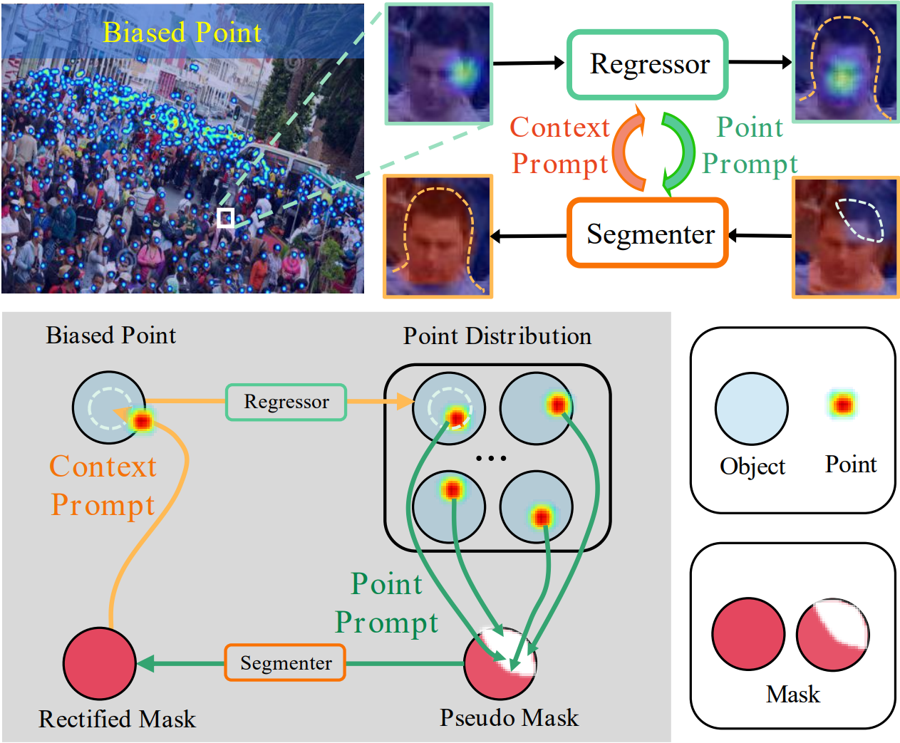
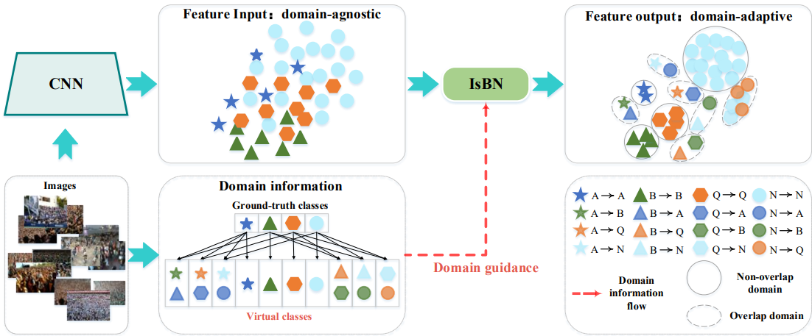

Mingyue GuoPh.D. studentSchool of Electronic, Electrical and Communication Engineering University of Chinese Academy of Sciences Beijing, China, 101408. Email: guomingyue21@mails.ucas.ac.cn; Github: https://github.com/csguomy; Google scholar: https://scholar.google.com |

|
Biography
I am a Ph.D. student of LAMP in the School of Electronic, Electrical and Communication Engineering, University of Chinese Academy of Sciences, advised by Prof. Qixiang Ye. I got my B.S. degree in Northest Electric power University of Computer Science and Technology in June 2015. I got my M.S. degree in Harbin Institute of Technology of Computer Application Technology in January 2018. I worked at Tencent and Pengcheng Laboratory from 2018 to 2021.
My research interests include computer vision and representation learning.
Publications
|  | Mingyue Guo, Li Yuan, Zhaoyi Yan, Binghui Chen, Yaowei Wang, Qixiang Ye
Regressor-Segmenter Mutual Prompt Learning for Crowd Counting Proceedings of the IEEE/CVF Conference on Computer Vision and Pattern Recognition, 2024 [Paper] [Code] |
|  | Mingyue Guo, Binghui Chen, Zhaoyi Yan, Yaowei Wang, Qixiang Ye
Virtual Classiffcation: Modulating Domain-Specific Knowledge for Multidomain Crowd Counting IEEE Transactions on Neural Networks and Learning Systems, 2022 [Paper] [Code] |
Awards
Director Scholarship, PCL, 2022.